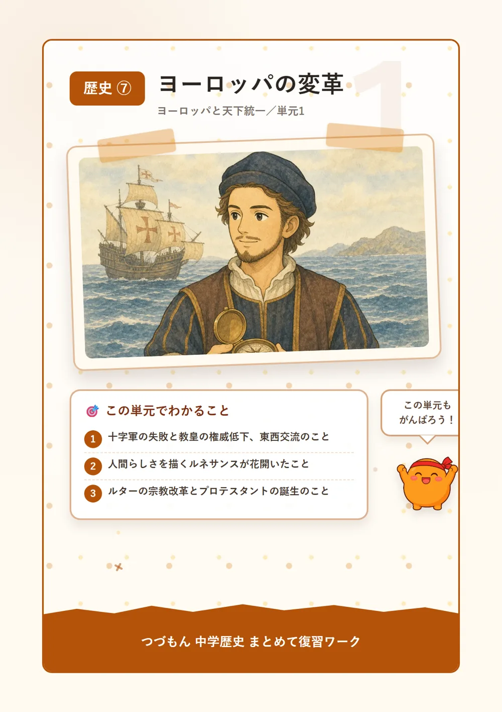
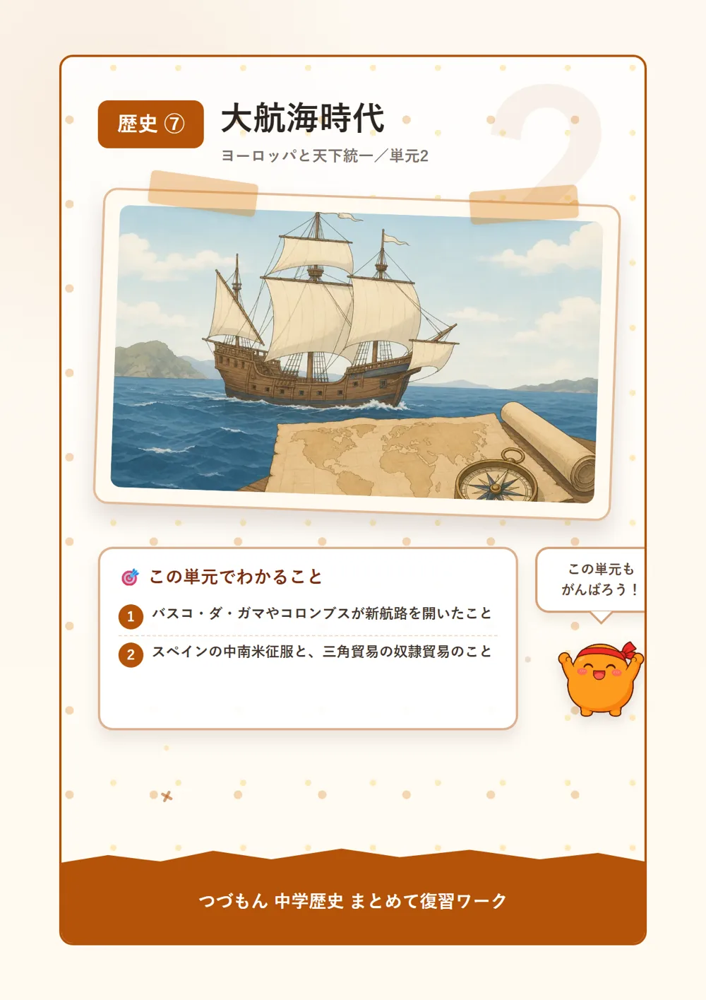
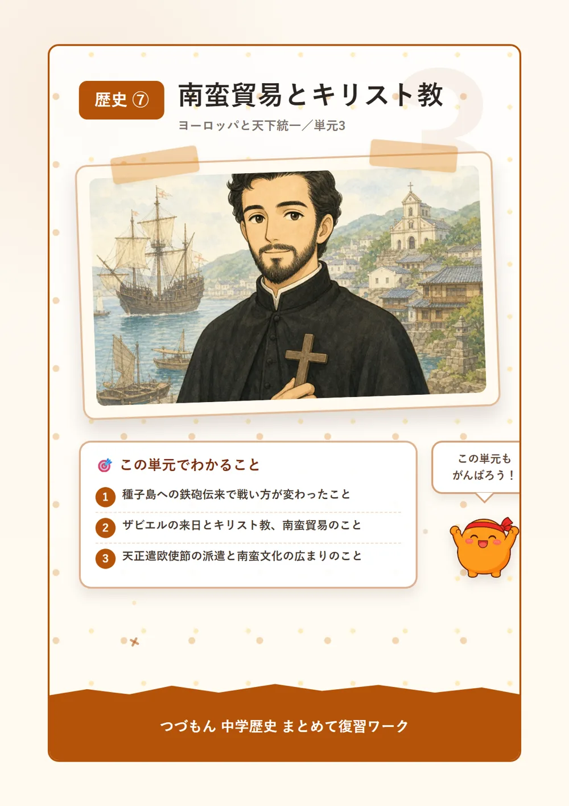
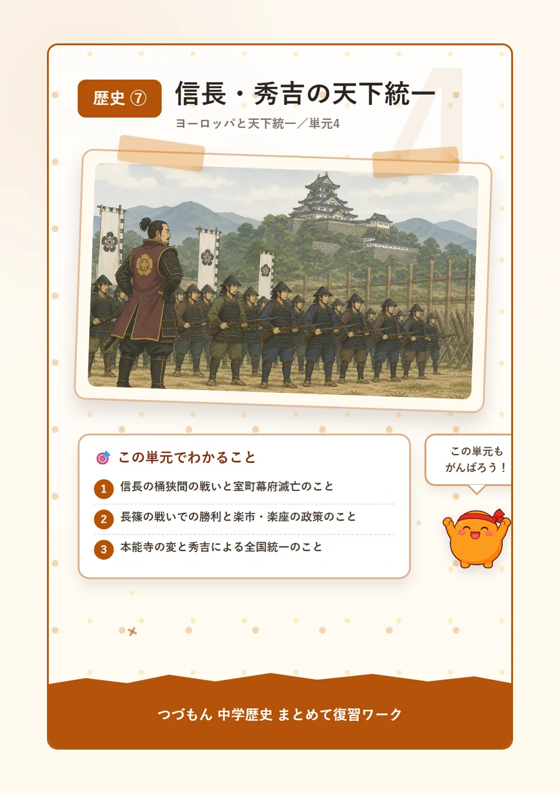
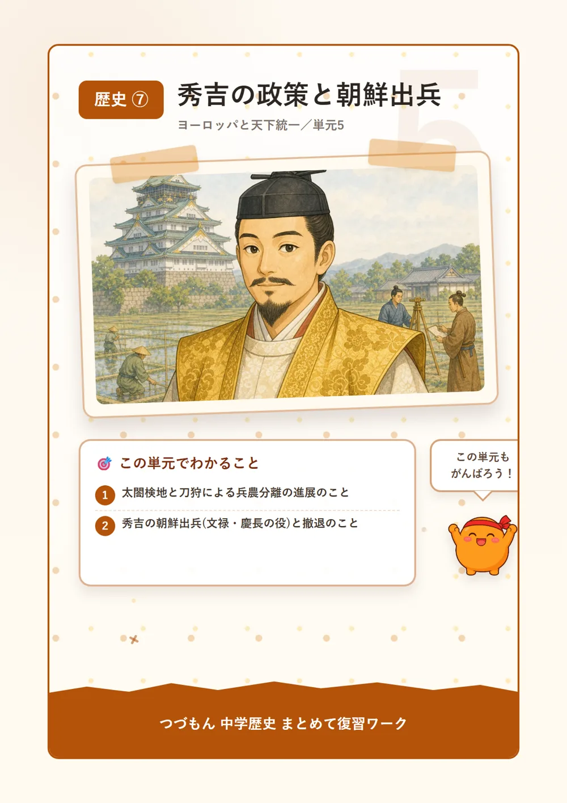
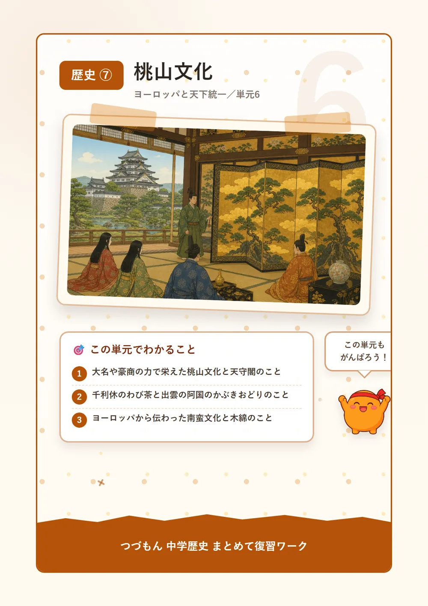

ヨーロッパと天下統一

ヨーロッパの変革

1十字軍とその影響
西ヨーロッパでは、ローマ教皇を頂点とするカトリック教会が、国王をしのぐくらい大きな権威を持っていたんだ。11世紀末、教皇の呼びかけで聖地エルサレムを取り戻そうと十字軍の遠征が始まり、その後なんと約200年も繰り返されたんだよ。でも遠征は結局失敗に終わってしまい、教皇の権威はかえって下がってしまったんだ。その一方で、この間にイスラム世界との交流がさかんになって、進んだ文化や知識がヨーロッパに伝わる大きなきっかけにもなったんだよ。
2ルネサンスの開花
14世紀のイタリアでは、古代ギリシャ・ローマの文化をもう一度見直して、人間らしさを表現しようとする文化運動、ルネサンス(文芸復興)が始まったんだ。「モナ・リザ」を描いたレオナルド・ダ・ヴィンチや、「最後の審判」で知られるミケランジェロなど、たくさんの芸術家が活躍したよ。また、このころ発明された活版印刷の技術のおかげで書物を安く大量に作れるようになり、新しい知識や考え方が人々の間にすばやく広く伝わるようになったんだ。
3宗教改革とカトリックの巻き返し
1517年、ドイツのルターは、「これを買えば罪が許される」として売られていた免罪符をカトリック教会が売り出したことに疑問を持ち、批判して宗教改革を始めたんだ。この動きに賛同してカトリック教会に抗議する人々はプロテスタントと呼ばれ、スイスのカルバンも改革を進めたよ。教会の権威がゆらぐ中、カトリック教会側もイエズス会という組織をつくって信者を増やす活動に力を入れ、宣教師を海外へ送り出して巻き返しをはかったんだ。

大航海時代

1新航路の開拓
15世紀以降、香辛料やキリスト教の布教を求めたヨーロッパ人は、新しい航路を切り開いて世界各地へ進出する大航海時代を迎えたんだ。1498年、ポルトガル人のバスコ・ダ・ガマはアフリカ南端を回ってインドにたどり着き、インド航路を開いたよ。1492年にはコロンブスがスペインの支援を受けて大西洋を横断し、カリブ海の島に到達したんだけど、本人は最後まで「アジアに着いた」と信じていたんだって。面白いよね。1522年にはマゼランの船隊が世界一周をなしとげ、地球が丸いことが実際に証明されたんだ。
2南北アメリカの征服と三角貿易
スペインは中南米へ進出し、ピサロがインカ帝国を、コルテスがアステカ帝国をそれぞれ滅ぼして、広大な植民地を築いたんだ。ヨーロッパ・アフリカ・アメリカ大陸を結ぶ三角貿易では、ヨーロッパが武器などをアフリカへ運び、多くのアフリカ人が奴隷としてアメリカ大陸へ無理やり送られてしまったんだよ。悲しい歴史だね。また、オランダは東インド会社を設立して、アジアの香辛料貿易を独占し、大きな利益を上げたんだ。
南蛮貿易とキリスト教

1鉄砲伝来
1543年、ポルトガル人を乗せた中国船が九州南方の種子島に流れ着いて、鉄砲が日本に伝えられたんだ。領主の種子島時尭が鉄砲の国産化を進め、その後鉄砲は近江の国友や和泉の堺でどんどん量産されるようになったよ。これによって、それまでの弓矢や刀を中心とした戦い方は大きく変わり、鉄砲をうまく使えるかどうかが戦国大名の勝敗を左右するようになっていったんだ。
2ザビエルの来日と南蛮貿易
1549年、イエズス会の宣教師ザビエルが鹿児島に上陸して、日本にキリスト教を伝えたんだ。それ以降、日本はポルトガル人・スペイン人との南蛮貿易を行い、銀を輸出して中国産の生糸などを輸入するようになったよ。貿易の利益を得ることなどを目的にキリスト教を受け入れる大名も現れて、キリシタン大名と呼ばれたんだ。1580年には大村純忠が長崎をイエズス会に寄進し、長崎は南蛮貿易の中心地としてにぎわうことになったんだよ。
3天正遣欧使節と南蛮文化
1582年、キリシタン大名の大友宗麟らは、4人の少年をローマ教皇のもとへ送る天正遣欧使節を派遣したんだ。少年たちは実に8年後に日本へ帰ってきたんだよ。このころ、ヨーロッパの文物が日本に伝わる南蛮文化も広まっていって、宣教師が持ち込んだ活版印刷術によって「平家物語」などがローマ字で印刷されたり、カステラなどの南蛮の菓子も日本に伝えられたりしたんだ。
信長・秀吉の天下統一

1織田信長の台頭
尾張の戦国大名織田信長は、1560年の桶狭間の戦いで、少ない兵ながら今川義元の大軍を奇襲して打ち破り、大きく勢力を広げたんだ。1573年には、もともと味方だった第15代将軍足利義昭と対立してこれを京都から追放し、約240年も続いた室町幕府を滅ぼしてしまったんだよ。これによって戦国の世は大きな転機を迎え、信長による天下統一への歩みが本格的に始まっていったんだ。
2信長の戦いと経済政策
信長は敵対する仏教勢力の比叡山延暦寺を焼き討ちにする一方、1575年の長篠の戦いでは鉄砲を効果的に使って、武田勝頼の騎馬軍団を打ち破ったんだ。また、税や座の特権をなくす楽市・楽座を行って商工業が自由に発展できるようにし、関所も廃止して物の行き来をさかんにしたんだよ。近江には壮大な安土城を築いて、天下統一の拠点にしたんだね。
3本能寺の変と秀吉の統一
1582年、信長は家臣の明智光秀に攻められて自害する本能寺の変が起こり、天下統一を目前にして倒れてしまったんだ。信長の後継者となった豊臣秀吉は山崎の戦いで光秀を討ち、大阪城を拠点に勢力を固めていったよ。1585年には関白に任じられ、1590年には関東の北条氏を滅ぼして全国統一を達成したんだ。信長・秀吉が政権を握ったこの時代を安土桃山時代と呼ぶんだよ。
秀吉の政策と朝鮮出兵

1太閤検地と刀狩
秀吉は1582年から全国で太閤検地を行い、京ますという統一されたますを基準に田畑を測量して、その土地の収穫量を石高という基準で表したんだ。これによって百姓は土地を耕作する権利を保障してもらえる代わりに、石高に応じて年貢を納める義務を負うことになったんだよ。さらに1588年には、百姓から刀や鉄砲などの武器を取り上げる刀狩を行い、一揆を防ぐとともに武士と農民の身分をはっきり分ける兵農分離を進めていったんだ。
2朝鮮出兵
全国統一を果たした秀吉は、中国の明の征服をめざして、1592年の文禄の役と1597年の慶長の役の二度にわたって朝鮮へ大軍を送ったんだ。でも朝鮮の武将李舜臣が亀甲船を率いて日本軍の補給路を断つなど激しく抵抗し、日本軍は苦戦を強いられたんだよ。1598年に秀吉が亡くなると日本軍は朝鮮から撤退したんだけど、このとき日本へ連れてこられた朝鮮人陶工の技術によって、九州各地で有田焼などの焼き物が発展していったんだ。
桃山文化

1豪壮な城と障壁画
信長・秀吉の時代、大名や豪商の力を背景に、豪華で力強い桃山文化が花開いたんだ。城の中心にそびえる天守閣は大名の権威を示す象徴で、白壁が美しい姫路城はその代表例として知られているよ。城のふすまや屏風には金箔を使った障壁画が描かれ、なかでも狩野永徳の「唐獅子図屏風」は、力強い唐獅子を描いた桃山文化を代表する傑作として名高いんだ。
2千利休のわび茶と新しい芸能
堺の商人千利休は、豪華な桃山文化のなかで、静かで質素な美を追い求めるわび茶を完成させて、わずか二畳の茶室「待庵」を造ったんだ。茶室の小さな入り口である「にじり口」は、武士も商人も同じように屈んで入ることから、身分を問わない茶の湯の平等の精神を表しているんだよ。すてきな考え方だよね。また、出雲の阿国が京都で始めた「かぶきおどり」も人気を集め、のちの歌舞伎のもとになったんだ。
3南蛮文化とくらしの変化
南蛮貿易を通じて、ポルトガルからカステラなどの菓子や、宣教師が持ち込んだ活版印刷術が伝わり、「平家物語」などがローマ字で印刷されたんだ。また、庶民の衣料には麻に比べて温かく肌触りのよい木綿が広まり始めて、人々のくらしにも変化をもたらしたんだよ。こうした南蛮文化は、桃山文化の国際色豊かな一面をつくりあげたんだね。